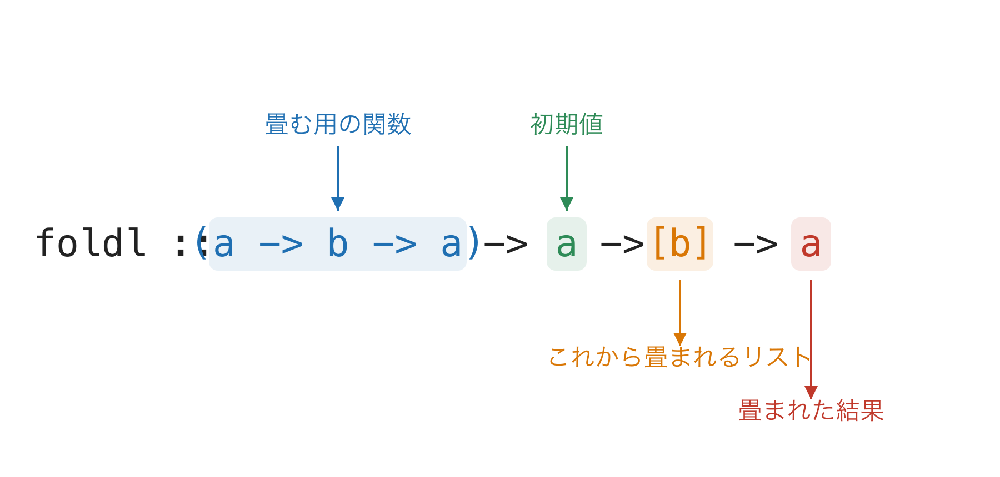

関数型プログラミング Ch6 関数(応用編)
資料
関数(応用編)
前章では関数の定義・演算子・分岐・再帰といった基礎を学びました. 本章では, 関数を第一級の値として扱う Haskell の強力な機能 ―― 高階関数, 無名関数(ラムダ式), 関数合成 ―― を学びます. これらは, 前章「式と文」で述べた ｢関数も式が表しうる値の一種である｣ という性質を最大限に活用するものです.
高階関数
これまで扱ってきた関数の引数はすべて,値でしたが値ではなく関数を引数として指定することが可能です. 関数を引数に取る関数を高階関数といいます.
例えば関数fとリスト[x,y,z]を引数として受け取り,リストの各要素にfを適用したリスト[f x, f y, f z]を返す関数は以下のように実装できます.
applyFToList :: (a -> b) -> [a] -> [b]
applyFToList _ [] = []
applyFToList f (x:xs) = f x : applyFToList f xs
main = do
print $ applyFToList (2*) [4,5,6] -- [8,10,12]
print $ applyFToList (1+) [4,5,6] -- [5,6,7]
print $ applyFToList show [4,5,6] -- ["4","5","6"]関数部分は, (a -> b)のように,丸括弧で囲んでいます.
map
この関数と同じものが組み込み関数(あらかじめ定義された関数)として提供されている代表的な高階関数map :: (a -> b) -> [a] -> [b]です.
main = do
print $ map (2*) [4,5,6] -- [8,10,12]
print $ map (1+) [4,5,6] -- [5,6,7]
print $ map show [4,5,6] -- ["4","5","6"]map を利用することで Exercise CH5-4 における toStr :: [Int] -> [Strings] は toStr = map show として実装できます.
Prelude
Haskellの組み込み関数はライブラリPreludeとして提供されています.Preludeはすべてのプロジェクトで自動で読み込まれています.
map関数は他のライブラリでも同名のものが提供されているため,それらと名前が被っている場合はどちらのmapを利用するのか判別できないというエラーが起きます.
例として,Data.Textもmapを提供しているために,Data.Textをimportしている場合には以下のようなエラーが出ます.
Ambiguous occurrence ‘map’
It could refer to
either ‘Prelude.map’,
imported from ‘Prelude’ at app/practice.hs:1:1
(and originally defined in ‘GHC.Base’)
or ‘Data.Text.map’,
imported from ‘Data.Text’ at app/practice.hs:4:1-16同名の関数が複数のライブラリで定義されている場合は,Prelude.mapなど,どのライブラリのmapであるかを明示するか,
hidingを利用して特定の関数のみをimport対象から外します.
import Data.Text hiding (map)
-- map 以外すべてをimportあるいは,利用する関数のみを明示的にimportすることも可能です.
import Data.Text hiding (Text,empty)
-- Text,emptyのみをimport以下, よく用いられる代表的な高階関数に関して紹介します.
filter
filter :: (a -> Bool) -> [a] -> [a]はリストの中から与えられた関数で判定される条件に合致するもののみを抽出する関数です.
main = do
print $ filter (10 < ) [5,10,15,20] -- [15,20]
print $ filter (elem 'a' ) ["cat","dog","bird"]fold
foldl :: (a -> b -> a) -> a -> [b] -> a,
foldr :: (a -> b -> b) -> b -> [a] -> b
は畳み込み関数です. foldl はリストの左端, foldr はリストの右端から値を一つずつ抜き出して, 2引数関数によって一つの値に畳み込んでいきます.
foldl の型を部分ごとに読むと, 「畳む用の関数・初期値・これから畳まれるリスト」の3つを受け取って「畳まれた結果」を返す関数だと分かります.

合計や積のように アキュムレータに値を蓄積していく 用途では, Prelude の foldl は遅延評価のため未評価のサンクが積み上がりスペースリークを起こすことがあります. 実用上は Data.List の foldl' (正格版)を使うのが定石です. 一方で foldr は遅延評価の恩恵で無限リストや短絡評価と相性が良く, 用途によって使い分けるのが一般的です.
例として,
main = do
print $ foldl (+) 0 [1,2,3] -- 6の挙動は,
foldl (+) 0 [1,2,3]
foldl (+) (0+1) [2,3]
foldl (+) (1+2) [3]
foldl (+) (3+3) []
6
となります.
foldl は「アキュムレータに値を蓄積していく」処理を一般化したものなので, Exercise CH5-4 で再帰を使って実装した length2 :: [a] -> Int も, 各要素を見るたびにアキュムレータを +1 する畳み込みとして書き直せます.
-- 再帰版 (Exercise CH5-4) を foldl で書き直したもの
length2 :: [a] -> Int
length2 xs = foldl count 0 xs
where count acc _ = acc + 1
main = do
print $ length2 [1,2,3,4,5] -- 5
print $ length2 "hello" -- 5ここで count acc _ = acc + 1 は, 要素の 中身は使わず (_) にアキュムレータ acc だけを 1 増やす2引数関数です. foldl count 0 [1,2,3] は count (count (count 0 1) 2) 3 と展開され, 要素の個数だけ +1 されるので長さが得られます.
zipWith, zip
zipWith :: (a -> b -> c) -> [a] -> [b] -> [c]
は2つのリストからそれぞれ値を順番に取り出して,関数を適用した結果をリストに格納する高階関数です.
例として.
main = do
print $ zipWith (++) ["a","b","c"] ["x","y","z"] -- ["ax","by","cz"]の挙動は,
zipWith (++) ["a","b","c"] ["x","y","z"]
["a" ++ "x" ,"b" ++ "y","c" ++ "z"]
となります.
zip :: [a] -> [b] -> [(a,b)]
は2つのリストからそれぞれ値を順番に取り出して,[(左のリスト値,右のリストの値)]を返す関数です.
タプルを返す2引数関数 , によって zipWith (,) として実装されます.
zip' :: [a] -> [b] -> [(a,b)]
zip' = zipWith (,)
tuple :: a -> b -> (a,b)
tuple a b = (a,b)
zip'' :: [a] -> [b] -> [(a,b)]
zip'' = zipWith tuple
main = do
print $ zip [1,2,3] [11,12,13] -- [(1,11),(2,12),(3,13)]
print $ zip' [1,2,3] [11,12,13] -- [(1,11),(2,12),(3,13)]
print $ zip'' [1,2,3] [11,12,13] -- [(1,11),(2,12),(3,13)]ループを見抜く ― 「1個ずつ」の繰り返しを1つの操作として捉える
手続き型言語では for で要素を 1 個ずつ処理しますが, Haskell では私は 「この繰り返しは 3 つのどれか」 をまず考えます.
- 各要素を変換する →
map(例: 全部 2 倍にする, 全部showで文字列にする) - 条件で残す/捨てる →
filter(例: 偶数だけ取り出す) - 全体を 1 つの値に畳む →
fold(例: 合計, 最大)
この章の最初に手で書いた applyFToList は, 実は map そのものでした. 「先頭に f を当てて, 残りは再帰で…」と 1 個ずつ追う代わりに, リスト全体への 1 回の操作 として map f xs と捉える. これが「ループを見抜く」ということです.
頭の中でやっていること:
- その繰り返しが結局 何を作りたいのか を見る (変換した新しいリストか, 絞り込んだリストか, 1 個の値か).
- 上の対応表で
map/filter/foldのどれに当たるかを決める. - 要素 1 個ぶんの処理だけをラムダや関数で書き, あとは高階関数に任せる.
for で「どう回すか」を書くのをやめ, 「何をしたいか」だけを書く. この見方ができると, 多くの繰り返しを自分で再帰で書かずに済むようになります.
Exercise CH6-1
map / foldl / zipWith の活用
- 与えられた整数のリストの各要素を二乗する関数squareListを,mapを使って定義してください.
squareList [1,2,3,4] -- [1,4,9,16]- 整数のリストの総積を計算する関数productListを,foldlを使って定義してください.
productList [1,2,3,4] -- 24- 2つのリストから,それぞれの要素の大きい方を選んで新しいリストを作る関数maxListを,zipWithを使って定義してください.
maxList [1,4,3] [2,2,5] -- [2,4,5]回答例
-- map で各要素を 2 乗
squareList :: [Int] -> [Int]
squareList xs = map (^2) xs
-- foldl で積を畳み込み (初期値 1)
productList :: [Int] -> Int
productList xs = foldl (*) 1 xs
-- zipWith で 2 要素ごとに大きい方を取る
maxList :: [Int] -> [Int] -> [Int]
maxList xs ys = zipWith (\x y -> if x > y then x else y) xs ys
-- 実行例
main :: IO ()
main = do
print $ squareList [1,2,3,4] -- [1,4,9,16]
print $ productList [1,2,3,4] -- 24
print $ maxList [1,4,3] [2,2,5] -- [2,4,5]無名関数(ラムダ式)
高階関数に与える関数はその場限りの利用となる場合が多いため,先程のzipWithとtupleによってzipを定義した例のように, いちいち別の関数名をつけることは手間が多くなり,コードも冗長になりがちです.
そのような場合に, 使い捨ての関数を定義する手法が,無名関数(ラムダ式) Lambda expressionです.
ラムダ計算は\lambdaを表す記号,\を用いて, \ 引数 -> 返り値の形で式を定義できます.
例として,
f x y z = x + y + z は
\ x y z -> x + y + z となります.
zipWith の例は以下のようにも定義できます.
main = do
print $ zip [1,2,3] [11,12,13] -- [(1,11),(2,12),(3,13)]
print $ zipWith (\ x y -> (x,y)) [1,2,3] [11,12,13] -- [(1,11),(2,12),(3,13)]また,練習問題中のmaxListは,以下のように定義できます.
main = do
print $ zipWith (\x y -> if x > y then x else y)
[1,4,3]
[2,2,5] -- [2,4,5]flipと高階関数
flip :: (a -> b -> c) -> b -> a -> cは,関数の引数の順番を入れ替える関数であり,以下のような挙動を示します.
main = do
print $ (,) "a" "b" -- ("a","b")
print $ flip (,) "a" "b" -- ("b","a")
---
print $ (>) 1 2 -- False
print $ flip (>) 1 2 -- True高階関数にラムダ式を組み合わせたことで,記述が長くなった場合などには,flipで引数の関数とリストを入れ替え,手続き型言語におけるfor文に近い記法を採用する場合があります.
main :: IO ()
main = do
print $ flip map [-3 .. 3]
$ \ x -> case x >= 0 of
True -> 1
False -> 0
-- [0,0,0,1,1,1,1]このようなflip,ラムダ式と$を組み合わせた記法は今後の状態系やモナドに関する議論などで頻出します.
また,このような書き方を前提としたforM,forM_などの関数も登場するので,頭の片隅に入れておいてください.
Exercise CH6-2
ラムダ式と高階関数の組合せ
- ラムダ式と高階関数を利用して,リストの各要素に3を加える関数addThreeを定義してください.
addThree [1,2,3] -- [4,5,6]- ラムダ式と高階関数を利用して,整数のリストから偶数だけを取り出す関数onlyEvenを定義してください.
onlyEven [1,2,3,4,5,6] -- [2,4,6]- ラムダ式と高階関数を利用して,整数のリストに含まれる要素の絶対値の合計を求める関数sumAbsを定義してください.
sumAbs [-3,4,-1,2] -- 10回答例
-- map とラムダ式で各要素に 3 を足す
addThree :: [Int] -> [Int]
addThree xs = map (\x -> x + 3) xs
-- filter とラムダ式で偶数のみを取り出す
onlyEven :: [Int] -> [Int]
onlyEven xs = filter (\x -> x `mod` 2 == 0) xs
-- map で絶対値へ変換してから sum で合計
sumAbs :: [Int] -> Int
sumAbs xs = sum (map (\x -> abs x) xs)
-- 実行例
main :: IO ()
main = do
print $ addThree [1,2,3] -- [4,5,6]
print $ onlyEven [1,2,3,4,5,6] -- [2,4,6]
print $ sumAbs [-3,4,-1,2] -- 10関数合成
数学において,2つの関数 f(x), g(x)があるとき, f(g(x))を合成関数と呼び, f \circ g とも書きます. 通常Haskellでも関数を合成する場合には,
f (g x) あるいは f $ g x と書きますが,関数 (.)によって (f . g) x と書くことができます.
関数定義においては
h = f . g のように定義することが可能です.
f :: Int -> Int
f x = 2 * x
g :: Int -> Int
g x = 3 + x
-- 実行例
main :: IO ()
main = do
-- f(g(x))
print $ f $ g 2 -- 10
-- (f . g) x, すなわち合成関数
print $ (f . g) 2 -- 10
-- 定義
let h = f . g
print $ h 2 -- 10練習問題(関数応用)
Exercise CH6-3
統計量 (標本標準偏差・積率相関係数)
与えられたリストの標本標準偏差
sを計算する関数を実装してください.与えられた2つのリストの積率相関係数
rを計算する関数を実装してください.
それぞれの定義は以下とします.
s = \sqrt{\frac{\sum_{i=1}^{n}(x_i - \bar{x})^2}{n}} r = \frac{\sum_{i=1}^{n}(x_i - \bar{x})(y_i - \bar{y})}{\sqrt{\sum_{i=1}^{n}(x_i - \bar{x})^2 \sum_{i=1}^{n}(y_i - \bar{y})^2}}
この演習は本章で学んだ map ・ zipWith ・ ラムダ式と, 前章の where 節を組み合わせて解く 応用総合問題 です. 各要素の偏差を map で, 2 リストの積和を zipWith で計算するのがポイントです.
-- 実行例
main :: IO ()
main = do
let xs = [1, 2 .. 5]
ys = [5, 4 .. 1]
putStrLn $ "標準偏差: " ++ show (stddev xs) -- 1.4142135623730951
putStrLn $ "相関係数: " ++ show (correlation xs ys) -- -0.9999999999999998回答例
-- 平均値を求める関数
mean :: [Double] -> Double
mean xs = sum xs / fromIntegral (length xs)
-- 標本標準偏差を求める関数
stddev :: [Double] -> Double
stddev xs = sqrt variance
where
m = mean xs
n = fromIntegral (length xs)
variance = sum (map (\x -> (x - m)^2) xs) / n
-- 積率相関係数を求める関数
correlation :: [Double] -> [Double] -> Double
correlation xs ys = covariance / (stddev xs * stddev ys)
where
mx = mean xs
my = mean ys
n = fromIntegral (length xs)
covariance = sum (zipWith (\x y -> (x - mx)*(y - my)) xs ys) / n
-- 実行例
main :: IO ()
main = do
let xs = [1, 2 .. 5]
ys = [5, 4 .. 1]
putStrLn $ "標準偏差: " ++ show (stddev xs) -- 1.4142135623730951
putStrLn $ "相関係数: " ++ show (correlation xs ys) -- -0.9999999999999998